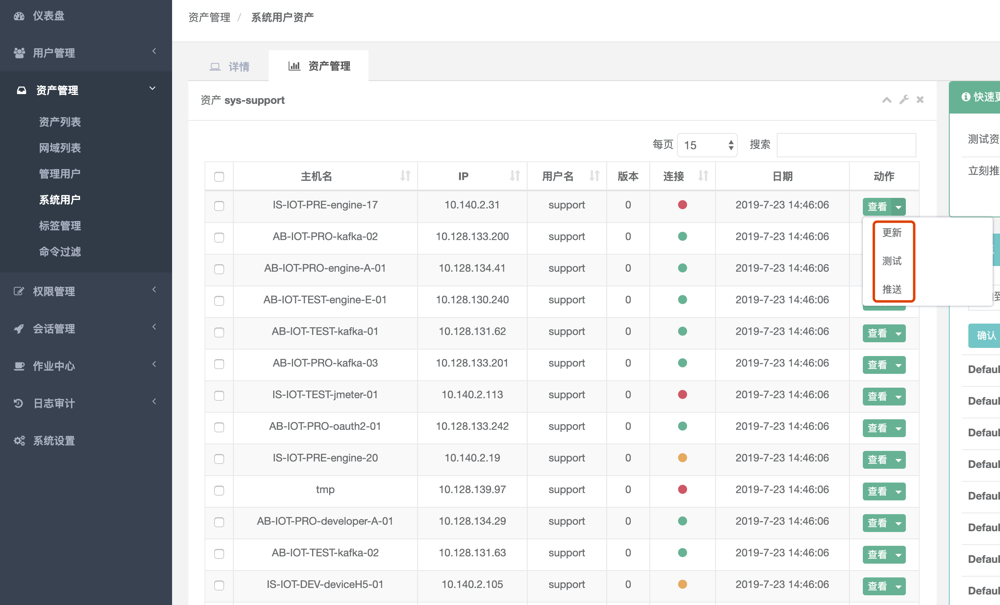

目录
7. JumpServer¶
启动脚本：/opt/jumpserver-0.3.1/service.sh
网站界面：/opt/jumpserver-0.3.1/templates
css、js：/opt/jumpserver-0.3.1/static
用户管理-用户/用户组:
这儿的用户是jumperserver的web登录用户
资产管理-资产列表:
就是服务器资源:
结点/资产
资产管理-管理用户:
是资产（被控服务器）上的root，或拥有 NOPASSWD ALL sudo权限的用户
Jumpserver使用该用户来 推送系统用户、获取资产硬件信息 等。
暂不支持 Windows或其它硬件， 可以随意设置一个
资产管理-系统用户:
Jumpserver跳转登录资产时使用的用户,可以理解为登录资产用户，如 web, sa, dba(ssh web@some-host)
而不是使用某个用户的用户名跳转登录服务器(ssh xiaoming@some-host);
简单来说是 用户使用自己的用户名登录Jumpserver, Jumpserver使用系统用户登录资产。
系统用户创建时，如果选择了自动推送 Jumpserver会使用ansible自动推送系统用户到资产中，
如果资产(交换机、windows)不支持ansible, 请手动填写账号密码。目前还不支持Windows的自动推送
注意: 见下图, jumpserver『推送』是把「系统用户」在指定服务器上创建可免密连接的服务
权限管理-资产授权:
把『用户/用户组』与『资产/节点』关联起来
使用步骤:
1. 增加用户(用户管理-用户)，此用户就是在jumperserver的登录用户, 也是你用ssh连接的用户
2. 增加资产(资产管理-资产列表)，就是要登录的服务器
3. 增加管理用户(资产管理-管理用户)，就是增加能登录服务器的root用户名密码(或密钥)
4. 系统用户(资产管理-管理用户)，增加一个基本的用户(这个是jumper连接资产的用户)
5. 授权关联(权限管理-资产授权)，把「用户」与「资产」有关联
Note
如下图, 增加资产后最好点击「测试」「推送」 2. 每次都要在『权限管理-资产授权』重新授权一下
